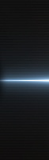
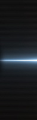

During the Season 3 European LCS, Bjergsen was unable to play with his team until Week 3 due to age restrictions put in place by Riot Games. For the first two weeks, he was temporarily replaced by the team's sub cowTard. After he turned 17 years old on February 21st, he was able to rejoin the main lineup and play their remaining LCS matches. After finding success with CW after his rejoining, his team left to become Ninjas in Pyjamas for the Summer LCS. On November 2nd, 2013, Bjergsen would leave NiP to move to NA and join the Team SoloMid lineup as their mid laner, becoming the 2nd player to cross over from the EU to NA LCS, after Edward left Gambit to join Curse during Season 3.[1] On January 23rd, 2014, it was announced that Bjergsen violated the LCS rules by approaching and encouraging a contracted LCS player to leave his position at Lemondogs. He admitted the violation and was fined $ 2,000.[2] Søren "Bjergsen" Bjerg is a charismatic mid lane wunderkind. A former superstar of the EU team Copenhagen Wolves, Bjergsen’s extensive champion pool and deadly mechanics brought more than one NA mid laner to their knees after his swap to TSM in 2013. Bjergsen also constantly evaluates his own performance and pinpoints weaknesses to fix. As he's improved over the years, he's cemented his position near the top of NA’s mid lane hierarchy. While Bjergsen’s opponents are falling, his own confidence is rising. Since joining TSM he has transformed from a shy, quiet, kid into one of the most popular personalities in NA esports -- and he has the TSM fans to prove it. Some rumors say he even learned how to cook without burning down the house, a feat that no one else in TSM history has accomplished. On the Rift he quickly became the primary shot-caller and team captain for TSM. While TSM was previously known for focusing their resources on Bjergsen in the mid lane, he has more of a 'we win as a team' mentality in mind. "We pick for the team, and what we do is for the team. It's a lot more jungle focused and team focused than the [mid lane] 1 vs. 1." It’s all about finding that perfect balance between the bjerger king and the rest of his team, and Bjergsen is determined to make it happen. Trivia